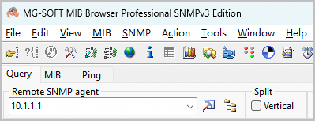
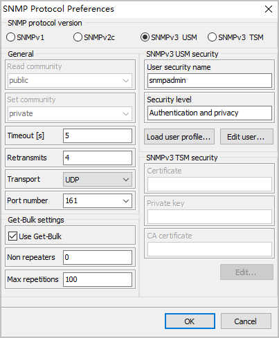

Configuring the Connection Between the NMS Tool and the Device
Context
Before configuring the device through the MIB, ensure that the NMS is successfully connected to the device.
SNMP is used for communication between the NMS and device. The SNMP versions include SNMPv1, SNMPv2c, and SNMPv3. Both SNMPv1 and SNMPv2c use community names for authentication, whereas SNMPv3 uses username + password for authentication, which is more secure. For security purposes, SNMPv3 is recommended.
The following assumes that the NMS uses SNMPv3 and MG-SOFT MIB Browser is used in the configuration procedure.
Procedure
- Run MG-SOFT MIB Browser. On the Query tab page, enter the IP address of the SNMP agent, that is, the IP address of the device.Figure 1 Query tab page

- Click on the Query tab page. The SNMP Protocol Preferences window is displayed.
- In the SNMP Protocol Preferences window shown in Figure 2, set SNMP parameters. Take SNMPv3 USM as an example.

The SNMP parameters must be the same as those on the device; otherwise, the configuration will fail.
Figure 2 SNMP parameter settings
- Select SNMPv3 USM for the SNMP version.
- Configure an SNMPv3 USM user.
- Add an SNMPv3 USM user.When the NMS connects to the device for the first time, a user needs to be added.
- Click Load user profile.... The SNMPv3 USM User Profiles dialog box is displayed. Click . The SNMPv3 Security Parameters (USM) dialog box is displayed, as shown in Figure 3.
- Set User profile name, Security user name, and Context engine ID (optional) for the SNMPv3 user, and select Authentication protocol and Privacy protocol. For details about the parameters, see the user manual of MG-SOFT MIB Browser.
- Click Change Password... behind the protocol type. The dialog box shown in Figure 4 is displayed. Enter the authentication password and click OK.
- The setting of the privacy password is similar to that of the authentication password, and is not mentioned here.
- Click OK and Select as prompted to add an SNMPv3 USM user.
- Modify an SNMPv3 USM user.
For an SNMPv3 USM user that already exists on the NMS, if the corresponding parameters on the device are modified, you can perform this step to modify the SNMPv3 USM user.
Click Edit User... to modify SNMPv3 USM user information. The procedure is similar to that for adding an SNMPv3 USM user.
- Delete an SNMPv3 USM user.
If an SNMPv3 USM user is not needed, perform this step to delete the user.
Click Load user profile.... In the SNMPv3 USM User Profiles dialog box, select the user to be deleted and click . In the dialog box that is displayed, confirm the user and click Yes to delete the user.
- Add an SNMPv3 USM user.
- Click OK.
- In the Query results window as shown in Figure 5, Response contains the sysUpTime field. If the connection status in the lower right corner is green, it indicates that MIB Browser has been connected to the device. You can then configure the device through MIB objects on MIB Browser.
Follow-up Procedure
MIB Browser may not contain all the MIB objects that you want to operate. You can load MIB files to address this problem. To load a MIB file, see Loading MIB Files.